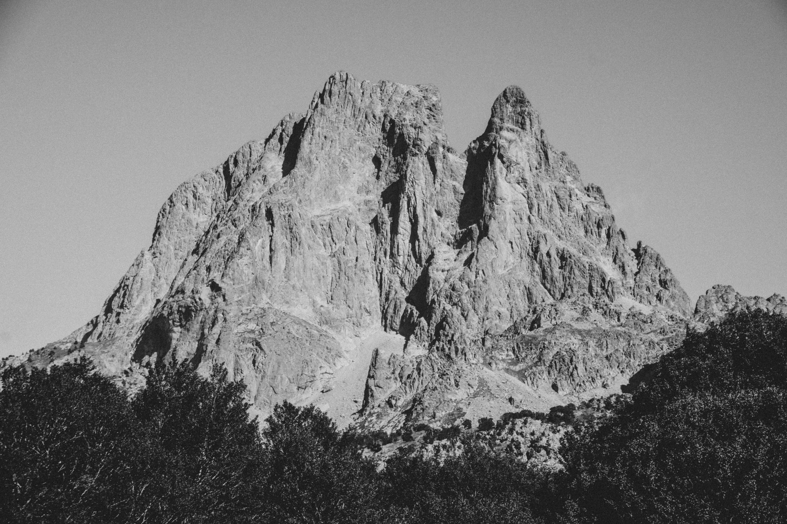

Les stations de ski des Pyrénées
Du soleil de la Cerdagne aux grands domaines des Hautes-Pyrénées : des stations souvent moins chères que dans les Alpes, à deux heures de Toulouse.
Photo : Oihan Brière / Unsplash
Les Pyrénées françaises comptent une quarantaine de stations, entre l’Atlantique et la Méditerranée. Les plus grandes, comme Saint-Lary ou le Grand Tourmalet, dépassent les 100 kilomètres de pistes, et les forfaits y sont souvent plus abordables que dans les grandes stations alpines.
Pour la saison 2026-2027, Cauterets ouvre parmi les premières, dès le 27 novembre, puis Font-Romeu et Saint-Lary le 4 décembre, le Grand Tourmalet le 5 décembre et Peyragudes le 12 décembre. Chaque guide donne les dates, l’accès en train ou en voiture et nos conseils.
Stations de ski
-
 Font-Romeu
Font-RomeuLe plateau le plus ensoleillé des Pyrénées et le train jaune pour monter. Font-Romeu ouvre le 4 décembre 2026.
-
 Saint-Lary
Saint-LaryUn village de la vallée d’Aure et 100 km de pistes au-dessus. Saint-Lary ouvre le 4 décembre 2026.
-
 Grand Tourmalet
Grand TourmaletLa Mongie, Barèges et le Pic du Midi, reliés par les pistes. Le Grand Tourmalet ouvre le 5 décembre 2026.
-
 Cauterets
CauteretsUn cirque très enneigé au-dessus d’une ville thermale. Cauterets ouvre dès le 27 novembre 2026.
-
 Peyragudes
PeyragudesDeux versants reliés, la piste 007 et la télécabine depuis Loudenvielle. Peyragudes ouvre le 12 décembre 2026.